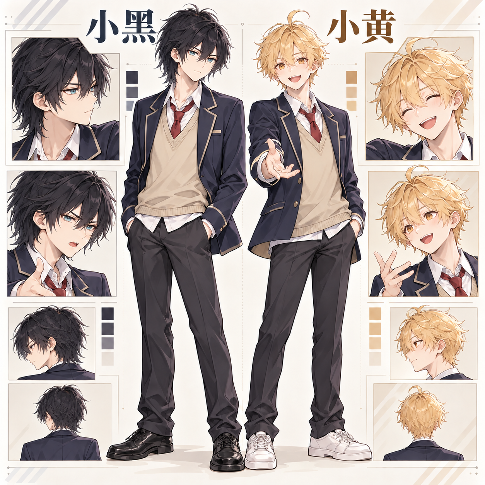

角色
小黑：强势、别扭、不愿轻易示弱。小黄：直率、开朗，用行动帮朋友争取被听见的机会。
Brief
小黑：强势、别扭、不愿轻易示弱。小黄：直率、开朗，用行动帮朋友争取被听见的机会。
班会提案被故意撞落和踩住。小黄介入后，小黑最终自己举手，争取负责人机会。
不使用讲解型旁白；用动作、视角和少量拟声词推动阅读，保留角色的克制感。
Character Lock
发型、瞳色、制服和性格气质先统一，
再进入连续分镜。

点击查看原图 ↗Final Pages
动作格、物件特写、人物介入与安静收束，
让分镜有节奏但不失阅读逻辑。
YOUR STORY
免费试用先确认故事方向与交付范围；完整漫画按角色数量、页数和修改范围报价。
申请免费试用